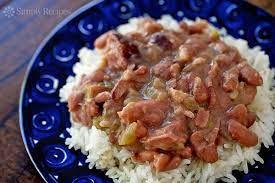

Red Beans and Rice Recipe

Red Beans and Rice
- Serves 4
- 3 Hours to Prepare
- 1 lb red/kidney beans
- 1 green bell pepper
- 1/2 white onion
- 1/2 head of garlic
- 1/2 stalk of celery
- 1 cup of white rice
- 1 lb of andouille sausage
- First you will want to soak your beans overnight or for atleast 8 hours prior to preperation.
- Now that your beans have been adequately soaked you will strain them into the sink and leave them there for now.
- The next step is to prepare your vegetables by mincing them either with a food processor or by knife.
- After the vegetables have been minced you should throw them in a 10 inch skillet for approx 6 mins with a tbsp of olive oil and cook until golden.
- Add about 4 cups of water into an 8qt stew pot along with minced vegetables and soaked beans.
- Bring to a boil, then reduce heat to medium-low.
- Cook for approx 2.5 hours (covered) stirring occasionally.
- Slice andouille sausage into small circles,then half.
- At around the 2.5 hour mark add sausage and cook for another 30 mins.
- Remove from heat and let cool before consuming.